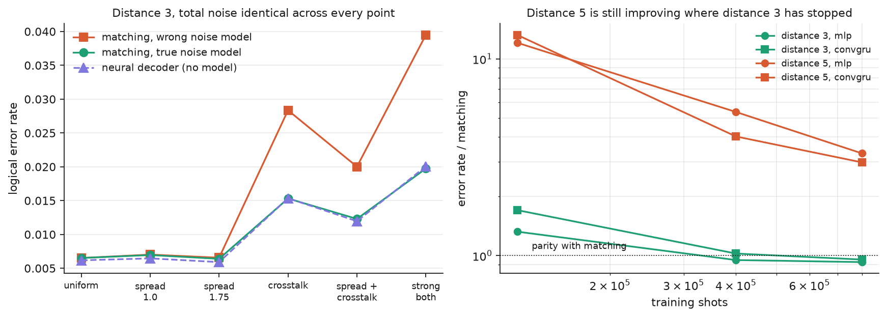

Machine learning applied to quantum computing.
Post 3 of 3. Post 1 covered what a decoder does. Post 2 covered the mechanism and what would falsify it. This one has the numbers.
Short version: at distance 3 the learned decoder matches minimum-weight perfect matching when matching is given the true noise model, and beats it by up to a factor of two when matching is given a realistic wrong one. At distance 5 it loses every row, and the reason turns out to be how long I trained rather than anything about the architectures.
Both halves of that are worth reading, and the second half took more work to establish than the first.

The left panel is the experiment. Every point carries the same total noise, calibrated by scaling the base error rate until detection-event density matches. Only the structure of the noise changes as you move right.
| noise | matching, true model | matching, wrong model | neural | penalty |
|---|---|---|---|---|
| uniform | 0.00652 | 0.00652 | 0.00617 | 1.00x |
| spread 1.0 | 0.00695 | 0.00702 | 0.00646 | 1.01x |
| spread 1.75 | 0.00639 | 0.00656 | 0.00591 | 1.03x |
| crosstalk | 0.01531 | 0.02835 | 0.01536 | 1.85x |
| spread + crosstalk | 0.01229 | 0.02002 | 0.01195 | 1.63x |
| strong both | 0.01974 | 0.03949 | 0.02006 | 2.00x |
The green and purple lines sit on top of each other across the whole sweep. The learned decoder, given no noise model at all, does about as well as matching handed the exact model that generated the data. Meanwhile the orange line pulls away.
Look at rows two and three. Per-qubit error rate spread, even at a factor of 1.75, costs matching almost nothing: penalties of 1.01x and 1.03x. Crosstalk at row four costs it 1.85x.
I had assumed both forms of mis-specification would hurt, and they do not. A graph with slightly wrong edge weights is still the right graph, and matching shrugs that off. A graph that has no edge for the error that actually occurred is a different situation.
That distinction is the whole finding, more precisely stated than I could have put it before running this. Calibration drift in your error rates is survivable. Correlated errors are not, because they are not representable, and no amount of recalibration fixes something your model cannot express.
At distance 5 matching wins every row of regime B, by margins between 3x and 10x. Taken at face value that says the approach fails as codes grow, which would be the more important result and would undercut everything above.
It is not what happened. The right panel is a budget sweep on a fixed configuration:
| training shots | distance 3 (MLP) | distance 5 (MLP) |
|---|---|---|
| 120,000 | 1.3x matching | 12.1x |
| 400,000 | 0.9x | 5.4x |
| 800,000 | 0.9x | 3.3x |
At distance 3 the networks reach parity by 400,000 shots and stop improving. At distance 5 they are still improving at 800,000 with no sign of flattening. The main sweep ran at 400,000 shots, so every distance-5 number in this post is from a model that had not finished learning.
I could have left the distance-5 rows in a table and let readers assume they meant something about graph networks versus convolutions. Measuring the budget curve costs one extra experiment and converts a false conclusion into a known limitation.
At distance 3 with a physical error rate of 0.01, the MLP beats matching outright: 0.05562 against 0.06056, intervals not overlapping. That is in regime A, the control, where matching has the correct noise model and is supposed to be near-optimal. I do not have a clean explanation for it, and I would want more error rates around that point before making anything of it.
The architecture ordering also flips with code size. The plain MLP is best at distance 3, the graph network at distance 5, consistently across noise settings. The graph prior seems to cost more than it returns until there is enough structure to justify it. At distance 3 the whole syndrome is 32 values, and a fully connected layer can just look at all of them.
Everything above is simulated. Google published syndrome measurements from their 2023 Sycamore experiment along with their own decoders' predictions, so the same models can be tested against a real device with published baselines and no reimplementation in between.
| experiment | trivial | pymatching | correlated matching | best neural |
|---|---|---|---|---|
| d=3, 5 rounds | 0.29340 | 0.14790 | 0.13760 | 0.15720 |
| d=3, 25 rounds | 0.49010 | 0.43020 | 0.42410 | 0.48920 |
| d=5, 5 rounds | 0.38690 | 0.14730 | 0.12750 | 0.26430 |
The five-round result is respectable. The 25-round result is not: 0.48920 against a trivial floor of 0.49010 means the model learned essentially nothing.
Each experiment has 50,000 shots. Seventy percent of that is 35,000 training examples, for an input of 200 detectors with a base flip rate near half. That is not enough supervision, and the budget curve above says exactly how far off it is.
This is the most practically useful thing here. In simulation, training data is free and the constraint is patience. On hardware, every shot costs device time, and the shot budget is what actually limits learned decoders. The 2023 release is a generous dataset by the standards of published QEC experiments and it is still one to two orders of magnitude short of what these models want.
Everything above predates a later addition to this repo. Google DeepMind's AlphaQubit (Bausch et al., Nature, Nov 2024) is a recurrent, transformer-based decoder that beat prior state of the art specifically on real Sycamore data at distance 3 and 5, the exact regime where every model on this page loses to matching. That's a direct target, not a passing resemblance, so I built a smaller-scale version of the same idea and ran it through the same evaluation as the other three: identical regimes, identical held-out shots, no separate treatment.
ConvGRU already has local structure (convolution) and temporal recurrence (a GRU). The GNN already has structured message-passing, on the same detector graph matching uses. Neither lets a detector attend to every other detector in its own round directly, only to nearby or graph-adjacent ones, so a correlation spanning the lattice has to relay across several hops or several rounds. Self-attention reaches all of them in one step. That's the specific piece AlphaQubit adds on top of what was already here, and the piece this decoder tests.
One real bug, caught before it shipped: the surface code's first and last rounds carry fewer detectors than the middle ones (Z-stabilisers only, then data-qubit measurements), so padded array index does not track the same physical stabiliser across a round where the width changes. A recurrent state carried by array position instead of by the stabiliser's actual (x, y) coordinate would silently merge two unrelated stabilisers' histories exactly at that boundary. Checked directly against stim's own detector coordinates before trusting it, not assumed: index 0 in round 0 and index 0 in round 1 land on different physical locations. Fixed by indexing the recurrent state by coordinate, with a dedicated test proving the disagreement is real, not by array position.
In the control regime and the correlated-noise regime, the transformer never wins. Every row, both distances, all three of the earlier models beat it. Parameter count isn't the excuse: it's held within 1.17x of the other three, the same discipline the whole comparison already runs on.
Real Sycamore hardware, the actual regime this addition was built for:
| experiment | trivial | pymatching | correlated | best neural |
|---|---|---|---|---|
| d=3, 5 rounds | 0.29340 | 0.14790 | 0.13760 | 0.14090 (transformer) |
| d=3, 25 rounds | 0.49010 | 0.43020 | 0.42410 | 0.48640 (transformer) |
| d=5, 5 rounds | 0.38690 | 0.14730 | 0.12750 | 0.26430 (gnn) |
| d=5, 25 rounds | 0.50520 | 0.43180 | 0.40650 | 0.50520 (transformer) |
At d=3, 5 rounds it wins outright: 0.1409 against pymatching's 0.1479, and against the previous best neural result there, ConvGRU at 0.1572. First time any decoder here beats a classical baseline on real hardware. At d=3, 25 rounds it's unchanged from before, still pinned near the trivial floor for the same reason already established: 35,000 training shots isn't enough supervision at that shot count, and no architecture fixes a training-data shortage. At d=5, 5 rounds it loses outright, worse than the GNN's earlier 0.2643. And d=5, 25 rounds, a configuration never evaluated with the earlier three architectures at all, comes back at exactly 0.5052, identical to the trivial floor to five decimal places. It learned nothing.
So: one real win, at the smallest, most favourable configuration on real hardware, and losses everywhere else, including one total failure. Not the clean "AlphaQubit's ideas fix the gap" result, and not nothing either. The honest read is narrower than either: the specific mechanism AlphaQubit adds helps exactly where the code is small enough and the round count short enough for attention's extra reach to matter before the training-shot shortage dominates everything else. That's a real, specific finding, not a hedge.
The architectures are standard. Neural decoding of surface codes goes back to Torlai and Melko in 2017, and the state of the art is AlphaQubit from Google DeepMind, trained with far more compute on real device data. Nothing here competes with that.
What is mine is the measurement: holding total noise fixed while varying its structure, so the comparison isolates model mismatch rather than difficulty, and separating architecture effects from training budget instead of leaving them confounded.
Matching's dominance is conditional on knowing your device, and that condition fails in exactly the way learned decoders are positioned to exploit. On real hardware today the binding constraint is not the decoder at all. It is how many shots you can afford.
Code, weights and every number above:
github.com/Bauxitiego/qec-neural-decoder,
the models,
the dataset.
Tables are generated from runs/RESULTS.json rather than transcribed.